Дисковые тормозные колодки
Безасбестовые фрикционные смеси для легковых автомобилей, мотоциклов и спортивных моделей.

+7 (495) 020-53-53Japan Brake Industrial Co. Ltd · группа Hitachi
Allied Nippon Ltd — признанный поставщик тормозных колодок и цилиндров на конвейеры мировых автопроизводителей.
1500+ наименований фирменных автозапчастей
О бренде
Компания начиналась в 1982 году с выпуска тормозных накладок вместе с японской Japan Brake Industrial Co. Ltd. В 1991-м партнёрство стало официальным — и производство пошло в рост.
Сегодня Allied Nippon входит в состав Japan Brake Industrial Co. Ltd., которая относится к группе «Hitachi», и остаётся одним из мировых лидеров в разработке технологий производства фрикционных материалов.
Продукция
Безасбестовые фрикционные смеси для легковых автомобилей, мотоциклов и спортивных моделей.
Полный размерный ряд под массовые платформы — от городских малолитражек до лёгкой коммерческой техники.
Линейки XTRA и MAX — собственная разработка для повышенных нагрузок.
То, с чего всё начиналось в 1982-м. Грузовой транспорт, автобусы, железнодорожные элементы.
Также в каталоге: автобусные компоненты и железнодорожные элементы.
Технологии и производство
Основные мощности работают в Нимране и Раджастхане. Рядом — собственная исследовательская лаборатория, где разрабатывают составы фрикционных материалов под конкретные платформы.
Безасбестовые смеси выпускаются вместе с японскими партнёрами. Продукция проходит проверку по американским и немецким регламентам, аккредитация — от международно признанных органов.
Сертификаты
Контакты